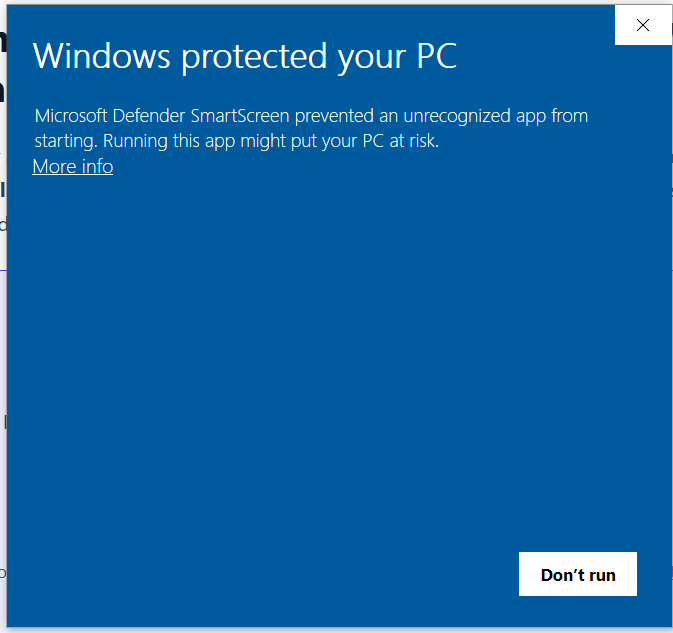

Free Typing Software Download Offline for Windows – TypeRaftar
If you are looking for a free typing software download offline for Windows PCs, laptops, or computer training labs, TypeRaftar Offline helps students practice typing without an active internet connection. It is designed for learners who want a distraction-free workspace to build speed and accuracy.
TypeRaftar Offline Installer (Windows)
Includes a starter set of offline exercises for local practice without internet.
Download OfflineOffline edition comes with limited exercises. For full access to 1500 free exercises, practice online at typeraftar.com.
What to do if you see "Windows protected your PC"?
Windows may show a safety warning when running a newly downloaded `.exe` installer. To continue setup:
- Click "More info".
- Click "Run anyway" to complete the installation.

Key Features of TypeRaftar Offline
- Works Without Internet: Once installed on a Windows computer, students can practice anytime even when Wi-Fi or mobile data is unavailable.
- Beginner to Exam Practice: Practice structured typing drills with adjustable timer and font size controls.
- Helpful for Computer Centers & Students: Easy for computer training centers and home learners to set up on student systems.
How to Install TypeRaftar Offline on Windows
- Click the Download Offline button above to save the setup file to your computer.
- Open your Downloads folder and double-click the installer file.
- Follow the on-screen installation steps to complete the setup.
- Open TypeRaftar Offline from the desktop shortcut and start practicing.
Frequently Asked Questions
Is TypeRaftar Offline free to download?
Yes, you can download and install the offline starter edition for free.
Why does the offline version have limited exercises?
The offline installer is kept lightweight with limited exercises, while the complete library of 1500 free exercises is available on the live website typeraftar.com.